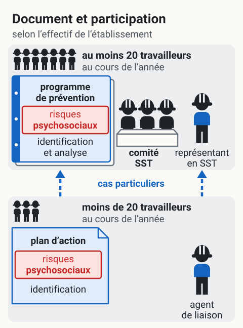
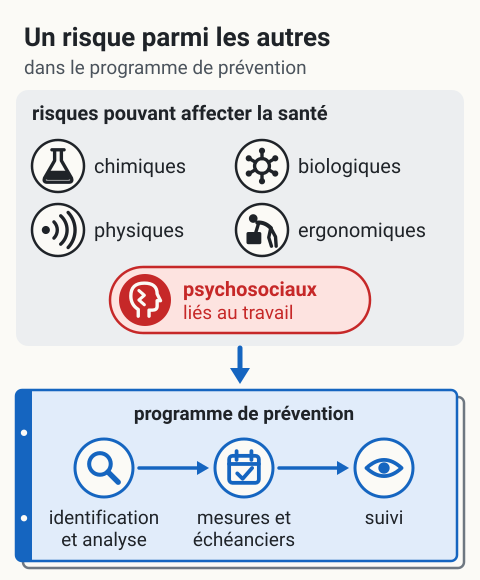

LMRSST, vue d'ensemble pour les RPS
Les risques psychosociaux liés au travail font partie des risques à identifier et à prendre en charge. Le document de prévention et les mécanismes de participation à appliquer dépendent notamment de l'établissement et de son effectif. Ils ne sont pas identiques dans tous les milieux. CNESST — Risques psychosociaux liés au travail.
Quel document et quels représentants ?
Le décompte se fait selon les règles applicables à l'établissement, et non simplement à l'entreprise entière.
| Situation générale | Prévention | Participation |
|---|---|---|
| Établissement de 20 travailleurs ou plus | Programme de prévention | Comité SST et représentant en santé et en sécurité |
| Établissement de 19 travailleurs ou moins | Plan d'action | Agent de liaison en santé et en sécurité |
Des situations particulières existent, notamment l'adhésion à une mutuelle de prévention, l'approche par multiétablissements et une exigence de la CNESST. Elles peuvent imposer un programme de prévention à un établissement de 19 travailleurs ou moins. Les chantiers de construction ont des mécanismes distincts.
{kind=link}

Toucher l'image pour l'agrandirSituation générale, dans les mots de la loi : l’effectif se compte par établissement, au cours de l’année. Dans des cas particuliers, un établissement de moins de 20 travailleurs peut devoir appliquer un programme de prévention ou désigner un représentant en SST ; les chantiers de construction ont des mécanismes distincts.
D’après cette page (Quel document et quels représentants ?) et la LMRSST (2021, chapitre 27), qui a remplacé ou complété ces articles de la LSST : art. 143 (art. 58 et 58.1), art. 144 (art. 59), art. 147 (art. 61.1 et 61.2), art. 150 (art. 68), art. 161 (art. 87, 88 et 88.1) et art. 167 (art. 97.1). Schéma de principe : le nombre de silhouettes n’est pas un effectif.
Sources : CNESST — Mécanismes en établissement ; programme de prévention.
Dates utiles
- 6 octobre 2021 : premières dispositions de la modernisation en vigueur.
- 6 avril 2022 : mise en place du régime intérimaire de mécanismes de prévention et de participation.
- 1er octobre 2025 : entrée en vigueur du régime permanent en établissement.
Ces dates ne constituent pas une échéance identique pour tous. Pour un nouvel assujettissement au programme de prévention, la CNESST prévoit un an à compter du moment où l'obligation commence ; un employeur déjà tenu de l'appliquer doit le poursuivre sans délai. Pour le plan d'action, le délai général débute le 1er octobre 2025 ou à la création de l'établissement, avec certaines situations d'application immédiate. Au 6 septembre 2026, il faut donc vérifier la situation et l'échéance propres à l'établissement.
Sources : CNESST — Calendrier de modernisation, délai du programme, délai du plan d'action.
Intégrer les RPS à la prévention
La CNESST distingue notamment le harcèlement, les violences et l'exposition à un événement potentiellement traumatique. La charge de travail, l'autonomie décisionnelle, la justice organisationnelle, la reconnaissance et le soutien sont des facteurs à examiner ensemble. CNESST — Facteurs psychosociaux.
Pour chaque situation retenue, préciser les mesures de prévention, les responsabilités, les échéances et le suivi dans le programme ou le plan applicable. Le programme de prévention comprend l'identification et l'analyse des risques psychosociaux ; l'absence de mention explicite dans l'ancien régime ne signifie pas que leur prévention était facultative.
{kind=link}

Toucher l'image pour l'agrandirLa loi nomme les risques psychosociaux liés au travail dans la même liste que les autres risques pouvant affecter la santé ; pour les risques identifiés, le programme de prévention prévoit des mesures, leurs échéanciers et un suivi. Le plan d’action en prévoit l’identification, des mesures avec échéanciers et des mesures de surveillance et d’entretien.
D’après cette page (Intégrer les RPS à la prévention) et la LMRSST : art. 144, qui remplace le deuxième alinéa de l’art. 59 de la LSST (programme de prévention, paragraphes 1° à 3°), et art. 147 (art. 61.2, plan d’action). Schéma de principe : aucun ordre de priorité entre les risques.
Application en mines
L'analyse du site peut examiner l'organisation des quarts, les communications en souterrain, la vie en camp et la coordination avec les sous-traitants. Ces exemples orientent l'observation ; ils ne créent ni présomption médicale, ni obligation de questionnaire clinique, ni échéancier réglementaire uniforme.
Les responsables du site doivent confirmer le périmètre des établissements, le calcul de l'effectif, le régime applicable aux travaux et les mécanismes déjà en place. Une validation juridique reste requise pour les cas particuliers ; cette page ne constitue pas une attestation de conformité.
Ressources
Document conservé pour référence
Consulter la copie du guide LMRSST conservée dans le wiki
Cette copie n’a pas été réévaluée dans la présente révision et peut contenir des dispositions transitoires. Pour déterminer les règles actuelles, consulter les textes officiels et les pages de la CNESST cités ci-dessus.
Pages qui pointent ici (67)
- ⚖️ Index LMRSST, CNESST SST psychosociale
- ❓ FAQ démarrage SST psychosociale
- ⭐ Top 20 articles SST psychosociale
- 🎯 Démarrage rapide pour direction et RH SST psychosociale
- 🎯 Démarrage rapide, conseiller SST Droit du travail
- 🎯 Démarrage rapide, direction et RH Droit du travail
- 🎯 Démarrage rapide, direction et RH Hygiène industrielle
- 🎯 Démarrage rapide, direction et RH Sécurité industrielle
- 📁 Documents et outils SST psychosociale
- 📖 Glossaire SST psychosociale
- 📖 Glossaire commun Droit du travail
- 📖 Glossaire commun Hygiène industrielle
- 📖 Glossaire commun Sécurité industrielle
- 📖 Glossaire commun Toxicologie
- 🔤 Index alphabétique des articles SST psychosociale
- 🚀 Démarrage rapide - Conseiller SST, ergonome Ergonomie
- 🚀 Démarrage rapide - Direction, RH Ergonomie
- art-51-LSST Ergonomie
- art-51-LSST Hygiène industrielle
- art-51-LSST Sécurité industrielle
- art-51-LSST Toxicologie
- art-62-LSST Sécurité industrielle
- Audit psychosocial complet, méthodologie SST psychosociale
- CNESST, rôles et pouvoirs SST psychosociale
- Comité SST et représentant en SST SST psychosociale
- Comités SST en milieu minier SST psychosociale
- Communication ascendante SST psychosociale
- Comparatif des cycles FIFO (14/14, 20/10, 21/7) SST psychosociale
- Confidentialité et éthique des mesures RPS SST psychosociale
- Coût économique des RPS pour l'employeur SST psychosociale
- Définition des risques psychosociaux SST psychosociale
- Démarche en hygiène industrielle Hygiène industrielle
- Évaluation et priorisation chimique Toxicologie
- Évaluation et surveillance ergonomique Ergonomie
- Formation des superviseurs à la détection SST psychosociale
- Gestion du SIMDUT et FDS en mine Hygiène industrielle
- Grille INSPQ d'identification des RPS SST psychosociale
- Harcèlement psychologique, recours SST psychosociale
- Indicateurs avancés et tardifs en SST Sécurité industrielle
- Inspecteur CNESST et RPS SST psychosociale
- Iso-strain SST psychosociale
- Législation et Normes SST psychosociale
- Législation et Normes SST psychosociale
- Lésion professionnelle d'origine psychologique SST psychosociale
- LMRSST - Loi modernisant le régime de santé et sécurité du travail Droit du travail
- Loi sur les mines et SST SST psychosociale
- LSST, droits et obligations Droit du travail
- Mécanismes de prévention LMRSST en mine Droit du travail
- Mettre en place un programme d'hygiène industrielle Hygiène industrielle
- Mettre en place une démarche d'appréciation des risques Sécurité industrielle
- Mineur entrepreneur (sous-traitance), vulnérabilités RPS SST psychosociale
- Modèle de Sélye, syndrome général d'adaptation SST psychosociale
- Norme CSA Z1003-13 SST psychosociale
- Obligation d'identifier les risques psychosociaux SST psychosociale
- Politique d'entreprise sur la santé psychologique SST psychosociale
- Préparer une visite d'inspecteur CNESST Droit du travail
- Prévention des TMS Ergonomie
- Programme d'aide aux employés (PAE) SST psychosociale
- Programme d'enquête d'accidents Sécurité industrielle
- Programme de gestion des risques machines Sécurité industrielle
- …